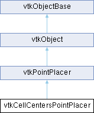

|
Etrek
|
|
Etrek
|
Snaps points at the center of a cell. More...
#include <vtkCellCentersPointPlacer.h>

Public Types | |
| enum | { ParametricCenter = 0 , CellPointsMean , None } |
Public Member Functions | |
| virtual void | AddProp (vtkProp *) |
| virtual void | RemoveViewProp (vtkProp *prop) |
| virtual void | RemoveAllProps () |
| vtkTypeBool | HasProp (vtkProp *) |
| int | GetNumberOfProps () |
| int | ComputeWorldPosition (vtkRenderer *ren, double displayPos[2], double worldPos[3], double worldOrient[9]) override |
| int | ComputeWorldPosition (vtkRenderer *ren, double displayPos[2], double refWorldPos[3], double worldPos[3], double worldOrient[9]) override |
| int | ValidateWorldPosition (double worldPos[3]) override |
| int | ValidateDisplayPosition (vtkRenderer *, double displayPos[2]) override |
| int | ValidateWorldPosition (double worldPos[3], double worldOrient[9]) override |
| vtkTypeMacro (vtkCellCentersPointPlacer, vtkPointPlacer) | |
| void | PrintSelf (ostream &os, vtkIndent indent) override |
| vtkGetObjectMacro (CellPicker, vtkCellPicker) | |
| vtkSetMacro (Mode, int) | |
| vtkGetMacro (Mode, int) | |
| Public Member Functions inherited from vtkPointPlacer | |
| virtual int | UpdateWorldPosition (vtkRenderer *ren, double worldPos[3], double worldOrient[9]) |
| virtual int | UpdateNodeWorldPosition (double worldPos[3], vtkIdType nodePointId) |
| virtual int | UpdateInternalState () |
| vtkTypeMacro (vtkPointPlacer, vtkObject) | |
| void | PrintSelf (ostream &os, vtkIndent indent) override |
| vtkSetClampMacro (PixelTolerance, int, 1, 100) | |
| vtkGetMacro (PixelTolerance, int) | |
| vtkSetClampMacro (WorldTolerance, double, 0.0, VTK_DOUBLE_MAX) | |
| vtkGetMacro (WorldTolerance, double) | |
| Public Member Functions inherited from vtkObject | |
| vtkBaseTypeMacro (vtkObject, vtkObjectBase) | |
| virtual void | DebugOn () |
| virtual void | DebugOff () |
| bool | GetDebug () |
| void | SetDebug (bool debugFlag) |
| virtual void | Modified () |
| virtual vtkMTimeType | GetMTime () |
| void | RemoveObserver (unsigned long tag) |
| void | RemoveObservers (unsigned long event) |
| void | RemoveObservers (const char *event) |
| void | RemoveAllObservers () |
| vtkTypeBool | HasObserver (unsigned long event) |
| vtkTypeBool | HasObserver (const char *event) |
| vtkTypeBool | InvokeEvent (unsigned long event) |
| vtkTypeBool | InvokeEvent (const char *event) |
| std::string | GetObjectDescription () const override |
| unsigned long | AddObserver (unsigned long event, vtkCommand *, float priority=0.0f) |
| unsigned long | AddObserver (const char *event, vtkCommand *, float priority=0.0f) |
| vtkCommand * | GetCommand (unsigned long tag) |
| void | RemoveObserver (vtkCommand *) |
| void | RemoveObservers (unsigned long event, vtkCommand *) |
| void | RemoveObservers (const char *event, vtkCommand *) |
| vtkTypeBool | HasObserver (unsigned long event, vtkCommand *) |
| vtkTypeBool | HasObserver (const char *event, vtkCommand *) |
| template<class U, class T> | |
| unsigned long | AddObserver (unsigned long event, U observer, void(T::*callback)(), float priority=0.0f) |
| template<class U, class T> | |
| unsigned long | AddObserver (unsigned long event, U observer, void(T::*callback)(vtkObject *, unsigned long, void *), float priority=0.0f) |
| template<class U, class T> | |
| unsigned long | AddObserver (unsigned long event, U observer, bool(T::*callback)(vtkObject *, unsigned long, void *), float priority=0.0f) |
| vtkTypeBool | InvokeEvent (unsigned long event, void *callData) |
| vtkTypeBool | InvokeEvent (const char *event, void *callData) |
| virtual void | SetObjectName (const std::string &objectName) |
| virtual std::string | GetObjectName () const |
| Public Member Functions inherited from vtkObjectBase | |
| const char * | GetClassName () const |
| virtual vtkTypeBool | IsA (const char *name) |
| virtual vtkIdType | GetNumberOfGenerationsFromBase (const char *name) |
| virtual void | Delete () |
| virtual void | FastDelete () |
| void | InitializeObjectBase () |
| void | Print (ostream &os) |
| void | Register (vtkObjectBase *o) |
| virtual void | UnRegister (vtkObjectBase *o) |
| int | GetReferenceCount () |
| void | SetReferenceCount (int) |
| bool | GetIsInMemkind () const |
| virtual void | PrintHeader (ostream &os, vtkIndent indent) |
| virtual void | PrintTrailer (ostream &os, vtkIndent indent) |
| virtual bool | UsesGarbageCollector () const |
Static Public Member Functions | |
| static vtkCellCentersPointPlacer * | New () |
| Static Public Member Functions inherited from vtkPointPlacer | |
| static vtkPointPlacer * | New () |
| Static Public Member Functions inherited from vtkObject | |
| static vtkObject * | New () |
| static void | BreakOnError () |
| static void | SetGlobalWarningDisplay (vtkTypeBool val) |
| static void | GlobalWarningDisplayOn () |
| static void | GlobalWarningDisplayOff () |
| static vtkTypeBool | GetGlobalWarningDisplay () |
| Static Public Member Functions inherited from vtkObjectBase | |
| static vtkTypeBool | IsTypeOf (const char *name) |
| static vtkIdType | GetNumberOfGenerationsFromBaseType (const char *name) |
| static vtkObjectBase * | New () |
| static void | SetMemkindDirectory (const char *directoryname) |
| static bool | GetUsingMemkind () |
Protected Attributes | |
| vtkPropCollection * | PickProps |
| vtkCellPicker * | CellPicker |
| int | Mode |
| Protected Attributes inherited from vtkPointPlacer | |
| int | PixelTolerance |
| double | WorldTolerance |
| Protected Attributes inherited from vtkObject | |
| bool | Debug |
| vtkTimeStamp | MTime |
| vtkSubjectHelper * | SubjectHelper |
| std::string | ObjectName |
| Protected Attributes inherited from vtkObjectBase | |
| std::atomic< int32_t > | ReferenceCount |
| vtkWeakPointerBase ** | WeakPointers |
Additional Inherited Members | |
| Protected Member Functions inherited from vtkObject | |
| void | RegisterInternal (vtkObjectBase *, vtkTypeBool check) override |
| void | UnRegisterInternal (vtkObjectBase *, vtkTypeBool check) override |
| void | InternalGrabFocus (vtkCommand *mouseEvents, vtkCommand *keypressEvents=nullptr) |
| void | InternalReleaseFocus () |
| Protected Member Functions inherited from vtkObjectBase | |
| virtual void | ReportReferences (vtkGarbageCollector *) |
| vtkObjectBase (const vtkObjectBase &) | |
| void | operator= (const vtkObjectBase &) |
| Static Protected Member Functions inherited from vtkObjectBase | |
| static vtkMallocingFunction | GetCurrentMallocFunction () |
| static vtkReallocingFunction | GetCurrentReallocFunction () |
| static vtkFreeingFunction | GetCurrentFreeFunction () |
| static vtkFreeingFunction | GetAlternateFreeFunction () |
Snaps points at the center of a cell.
vtkCellCentersPointPlacer is a class to snap points on the center of cells. The class has 3 modes. In the ParametricCenter mode, it snaps points to the parametric center of the cell (see vtkCell). In CellPointsMean mode, points are snapped to the mean of the points in the cell. In 'None' mode, no snapping is performed. The computed world position is the picked position within the cell.
|
overridevirtual |
Given a renderer, a display position, and a reference world position, compute the new world position and orientation of this point. This method is typically used by the representation to move the point.
Reimplemented from vtkPointPlacer.
|
overridevirtual |
Given a renderer and a display position in pixel coordinates, compute the world position and orientation where this point will be placed. This method is typically used by the representation to place the point initially. For the Terrain point placer this computes world points that lie at the specified height above the terrain.
Reimplemented from vtkPointPlacer.
|
static |
Instantiate this class.
|
overridevirtual |
Methods invoked by print to print information about the object including superclasses. Typically not called by the user (use Print() instead) but used in the hierarchical print process to combine the output of several classes.
Reimplemented from vtkObjectBase.
|
overridevirtual |
Given a display position, check the validity of this position.
Reimplemented from vtkPointPlacer.
|
overridevirtual |
Given a world position check the validity of this position according to the constraints of the placer
Reimplemented from vtkPointPlacer.
|
overridevirtual |
Given a world position and a world orientation, validate it according to the constraints of the placer.
Reimplemented from vtkPointPlacer.
| vtkCellCentersPointPlacer::vtkGetObjectMacro | ( | CellPicker | , |
| vtkCellPicker | ) |
Get the Prop picker.
| vtkCellCentersPointPlacer::vtkSetMacro | ( | Mode | , |
| int | ) |
Modes to change the point placement. Parametric center picks the parametric center within the cell. CellPointsMean picks the average of all points in the cell. When the mode is None, the input point is passed through unmodified. Default is CellPointsMean.
| vtkCellCentersPointPlacer::vtkTypeMacro | ( | vtkCellCentersPointPlacer | , |
| vtkPointPlacer | ) |
Standard methods for instances of this class.